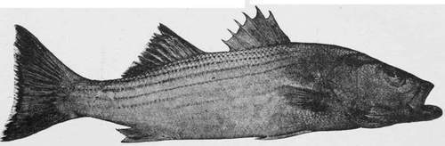

The Striped Bass. Part 4
Description
This section is from the book "American Game Fishes", by W. A. Perry. Also available from Amazon: American Game Fishes: Their Habits, Habitat, and Peculiarities; How, When, and Where to Angle for Them.
The Striped Bass. Part 4
What was it? It was evidently inanimate and floating. He peered out into the darkness, straining every visual nerve, but he might as well have attempted to see through the darkness of Egypt as that which now encircled him. He became nervous-almost frightened. There passed through his mind thoughts of the river's dead-of ghastly, sheeted forms which he had seen on the cold slabs of the morgue; of the horrible semblance of humanity which he had once seen floating in a ferry-slip, the features decomposed and half eaten by fishes, while the rayless eyes seemed to look up to his horrified gaze in mute appeal, that they might be laid away far from the sight of man under the sod. He felt for his bait-knife to cut the thing loose, but a feeling of pride came to his assistance, and he laid it down again. Finally summoning all his manhood, he turned the handle of the reel slowly until he knew by the position of the line that it was almost within his reach. Here was a moment of suspense. He did not wish to touch it in the darkness, neither did he wish to use the gaff-hook. He felt in his pocket for a match, scratched it a number of times on the gunwale of the boat, and waiting for the sulphur to burn off, held it over the stern, and in the dim, flickering light which it afforded, beheld-an empty pork-barrel dancing and courtesying to him on the waves. He burst into a laugh which had nothing of mirth in it, but pulled up his anchor-and then I went home, and have never fished in Hell Gate at night since.
There is a large class of anglers in the city of New York and its vicinity, among them many experts, who can rarely leave their business cares for more than a day at a time, and whose trips are limited to such localities as can be reached in an hour or two, so as to admit of their returning on the same day. To these there is a charm about the very name of Bass which is irresistible, and in the October days, when the cheering word comes from any of the estuaries of New York Bay, or Spuyten Duyvil, or Coney Island Creek, or at Kingsbridge, or some of the upper docks of the city itself, these anglers of a day may be seen at the fish-markets in the early hours of the morning, with rods and weather-beaten fish-baskets laying in their stock of shedder crabs, shrimp, and sand-worrns, not forgetting a string or two of soft clams, for Bass are capricious in their taste, and will sometimes take the plebeian clam in preference to the aristocratic and high-priced shedder. At this season of the year the waters of Newark Bay, Staten Island Sound, and the Kill von Kull will fairly teem with small Bass, rarely reaching five pounds -oftener ranging from three-fourths to one and one-half pounds each-and will be dotted with the small boats of anglers eager in the pursuit of the gamy little fish.
A day at one of these favored spots with a genial companion, or, if alone, spent in those delicious musings and self-communings into which one easily falls from pure idle enjoyment, broken occasionally by the tug of some prying unfortunate who attempts to purloin the bait and comes to grief on the treacherous barb, is one to be treasured in the memory and marked with a white stone forever.
As our boat swings lazily with the current, we note the wondrous witch-work which the frosts have wrought upon the foliage of the neighboring hills, the russet browns, and vermilions, and yellows mingling boldly with the dark green of the cedars, while the soft haze of the Indian summer mellows and blends the brilliant dyes into a mass of harmonious coloring, giving them an indistinctness which makes it hard to realize that we are not in dream-land. Emerson asks, "Who can guess how much firmness the sea-beaten rock has taught the fisherman? How much tranquillity has been reflected to man from the azure sky?" We give it up; we feel in no mood to answer such questions; we know only that the hours glide by with a fleetness unusual, and that every moment brings with it its measure of pure and unalloyed content.
What matters it if our catch does not rise above the dignity of pan-fish, or even if the proverbial "fisherman's luck" should fall to our lot? we have a day spent in the glorious autumn weather, breathing the balmy air of the Indian summer, tempered and softened as it comes over the salt water, until we feel an exhilaration which will show itself for many days after in a renewed activity of mind and body.
When the tide rises or the fish cease biting, we try other grounds, never rowing over the spot which we propose to fish, but approaching it with the utmost caution, particularly if the water be shallow, for your Bass is a shy fish, and grows in wariness as he increases in size. He is as keen of eye as a Trout, and will take alarm at the near approach of a boat or at any unusual disturbance of the water. So we drop our anchor noiselessly, far enough from the feeding-ground to have our boat swing within easy casting distance. The more quietly these operations are conducted, the greater the probability of taking large fish.
I have many times fished with an old friend-that thorough angler and excellent writer, Genio C. Scott-on the south side of Long Island for Trout, at Rockaway Inlet for Sheepshead; but the one day that we had, off Staten Island, fishing for Striped Bass, when I sat, as it were, at the feet of Gamaliel, gathering in heaps of fish-lore and occasional fishes, will ever have a place in my memory as one of perfect enjoyment. Peace to his ashes.
We caught, that day, thirty Bass, averaging one and three-quarter pounds, in two hours'fishing.
The baits used in fishing for Bass, are, as Mr. Venus puts it, in "Our Mutual Friend," "warious," depending entirely on the location. On the Susquehanna the Bass are trolled for with the eel tail, and they take it readily. At the falls of the Potomac, and also on the Passaic and Raritan rivers, they take the fly. No doubt they would rise to the fly in other waters if properly invited, but these are small Bass. At West Island, No Man's Land, Block Island, and the fishing stands of the Vineyard Islands, the Menhaden bait and Lobster tail are used with great success. At Hell Gate, and other io places in the vicinity of New York, shrimp, shedder crabs, soft clams, squid and sand-worms are the favorite baits, either in trolling or still fishing-the white sand-worm, or blood-worm, as it is sometimes called, from the reddish fluid that it gives out when pierced by the hook, being by far the most killing of all. They cost about two dollars a hundred, while, when fishing at Gay Head, Martha's Vineyard, I paid but one dollar and fifty cents per hundred for young Lobsters. Mr. Tillinghast, of New Bedford, stood by me where? I was fishing, and kept me supplied with bait. The tail was cut off and the shell peeled from it-that made one bait; the rest of the lobster he cut up fine and threw into the water as "chum," to attract the fish. After a time he became tired, and although he declared that the water looked more "Bassy" than he had seen it in the several days that he had been trying for them, left me, saying jokingly, "All the Bass you catch to-day I will put in my eye." In less than an hour I had two, one of twenty-five pounds and one of fifteen pounds. I shall always remember the pleasure that I took in thinking of the unmerciful test that at his own suggestion he would have to sustain on my return to the light-house.
Continue to: